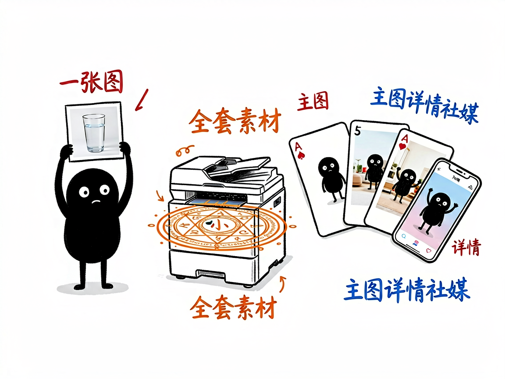

电商主图详情页，一套 Prompt 全搞定？—— ecom-details-image 介绍
做电商最烦的素材环节：主图要白底图、详情页要场景图、社媒要推广图、直播要背景图，一个产品几十张图，找设计师排期两周，改稿改到崩溃。ecom-details-image 把这件事变成一句话：输入产品图和需求描述，自动生成全套电商视觉素材——不配 API 时给你可执行的 Prompt，配了 API 直接出图。

它到底能做什么
- 25 种场景模板：白底主图、生活方式、平铺摆拍、细节特写、海报 Banner、社媒 UGC、模特展示、前后对比、爆炸图、虚拟试穿、直播间场景……
- Campaign Style Lock：多图自动锁定色板、冷暖调、字体、光线、布局——整套图视觉一致，不会一张一个风格。
- 转化驱动诊断：自动判断你的产品是视觉驱动、痛点驱动还是情感价值驱动，针对性排图片序列。
- 参考图生成：传入产品实拍图，生成的产品外观贴近真实商品，不会画歪你的包装。
- 双模式：只出 Prompt（拿去任何生图工具用）或直连你自己的 OpenAI 兼容 API 出图。
怎么用
场景 1：新品上架全套图 你：这是我的产品图，帮我生成 Amazon 主图 7 张 + 详情页 6 屏。 AI：诊断转化类型 → 排图片序列 → Style Lock 锁定视觉 → 输出全套 Prompt（配置了 API 则直接出图）。
场景 2：社媒推广 你：给我的保温杯出 5 张小红书风格的种草图。 AI：套 UGC 模板，生活场景+近景+手持角度，5 条 Prompt 一次给出。
谁适合用
- 跨境电商卖家（Amazon/Shopify/独立站）。
- 国内电商运营（淘宝/拼多多/抖音小店）。
- 需要批量出营销图但设计资源不足的团队。
一点说明
本技能提示词模板源自开源项目（buluslan/gpt-image2-ecommerce，致谢 linux.do 社区）。生图脚本纯 Python 标准库实现零依赖；未配置 API 时 Prompt 模式完全可用。